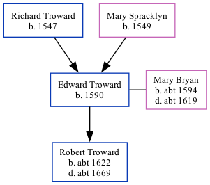

Edward Troward 1590 -
[ Home ] | [ Calendar ] | [ Surnames Index ] | [ Family History ]The child of Richard Troward and Mary Spracklyn, Edward Troward, the 9 times great-grandfather of <a href="I1.html">Nigel Horne</a>, was born in Ramsgate, Kent, England in 1590, was baptized there on Sep 20, 1590 and married Mary Bryan (with whom he had 1 child, Robert) in St Lawrence, Thanet, Kent, England on Jun 14, 1613<span class="citation">1</span> (KFHS CD 29).
Parents
- Richard was born in 1547
- Mary was born in 1549
Children
- Robert was born c. 1622
Citations
- Familysearch.org (<a href="http://www.familysearch.org/Eng/search/IGI/individual_record.asp?recid=100010036903&lds=1®ion=2&frompage=99">www.familysearch.org</a>)
Media
England Marriages 1538-1973 - R_848388321
England Marriages 1538-1973 - R_855435824
Kent, East Kent marriage index 1538-1754 - GBPRS/EASTKENT/MAR/051266/1
Family Tree
Generated by Ged2Site. Last updated on Jul 20, 2025